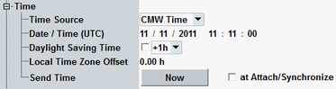

The "Time" section allows you to send configurable date and time information to the MS. Thus you can update the date and time displayed by the mobile. In a real network, this service is typically used to send the current local time to the MS.
The section is only visible if R&S CMW-KS210 is available.

- "CMW Time"
Selects the current CMW (Windows) date and time as source. The Windows settings determine the UTC date, the UTC time, the current daylight saving time offset and the time zone offset. - "Date / Time"
Selects the parameters "Date / Time (UTC)", "Daylight Saving Time", and "Local Time Zone Offset" as source.
Defines the UTC date and time to be used if "Time Source" is set to "Date / Time".
Remote command:Specifies a daylight saving time (DST) offset to be used if "Time Source" is set to "Date / Time".
You can disable DST or enable it with an offset of +1 hour or +2 hours.
Remote command:Specifies a local time zone offset to be used if "Time Source" is set to "Date / Time".
The local time zone offset is an offset from UTC according to the time zone of the region on earth where the R&S CMW operates.
Remote command:Press "Now" to send the date and time information to the MS. Sending time is only possible if the MS has performed a location update in the CS domain (CS state "Synchronized" or "Call Established").
"at Attach/Synchronize" selects whether the date and time information is sent to the MS during the location update and attach procedures.
Remote command: